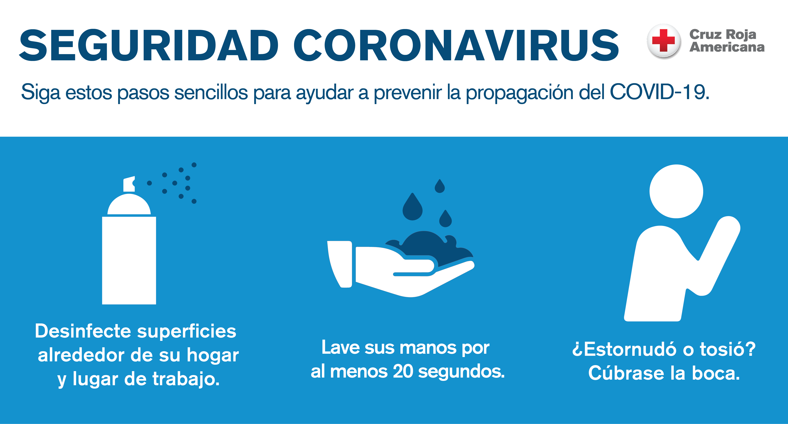
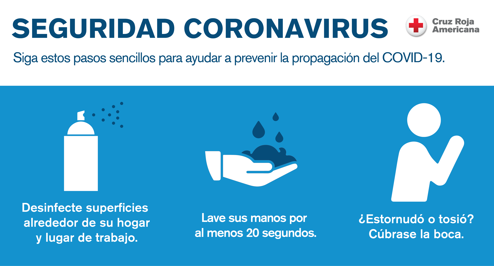

COVID-19
BIENVENIDOS A NUESTRA PAGINA WEB INFORMACION SANITARIA
 

Afrontamiento!
Informacion Previa
La COVID-19 afecta de distintas maneras en función de cada persona. La mayoría de las personas que se contagian presentan síntomas de intensidad leve o moderada, y se recuperan sin necesidad de hospitalización. "CÓMO SE PROPAGA"

Los síntomas más habituales son los siguientes:
Fiebre, Tos seca, Cansancio.


El virus que causa la COVID‑19 se transmite principalmente a través de las gotículas generadas cuando una persona infectada tose, estornuda o espira. Estas gotículas son demasiado pesadas para permanecer suspendidas en el aire y caen rápidamente sobre el suelo o las superficies. Usted puede infectarse al inhalar el virus si está cerca de una persona con COVID‑19 o si, tras tocar una superficie contaminada, se toca los ojos, la nariz o la boca.
En este sitio web se puede encontrar información y orientaciones de la OMS acerca del actual brote de enfermedad por coronavirus (COVID-19) que fue notificado por primera vez en Wuhan (China) el 31 de diciembre de 2019. En esta página figura información actualizada diariamente. La OMS está colaborando estrechamente con expertos mundiales, gobiernos y asociados para ampliar rápidamente los conocimientos científicos sobre este nuevo virus, rastrear su propagación y virulencia y asesorar a los países y las personas sobre la medidas para proteger la salud y prevenir la propagación del brote.


¿Cuáles son los síntomas de COVID-19?
Si presentas síntomas graves, busca atención médica inmediata. Sin embargo, siempre debes llamar a tu doctor o centro de atención sanitaria antes de presentarte en el lugar en cuestión. Lo recomendable es que las personas que sufran síntomas leves y tengan un buen estado de salud general se confinen en casa. De media, las personas que se contagian empiezan a presentar síntomas en un plazo de 5 a 6 días desde que se infectan, pero pueden tardar hasta 14. .
¿A quiénes afecta y cuales son sus sintomas?
Se conoce que cualquier persona puede infectarse, independientemente de su edad, pero hasta el momento se han registrado relativamente pocos casos de COVID-19 en niños. La enfermedad es mortal en raras ocasiones, y hasta ahora las víctimas mortales han sido personas de edad avanzada que ya padecían una enfermedad crónica como diabetes, asma o hipertensión. El nuevo Coronavirus causa una Infección Respiratoria Aguda (IRA), es decir una gripa, que puede ser leve, moderada o severa. Puede producir fiebre, tos, secreciones nasales (mocos) y malestar general. Algunos pacientes pueden presentar dificultad para respirar.
¿Cómo prevenirlo?
Evita el contacto cercano con personas enfermas siempre tomar las medidas de bioseguridad y practicarlas a diario
Si tienes síntomas de resfriado, quédate en casa y usa tapabocas para si proteger las personas de la tercera edad
#QUEDATE EN CASA
ESPERO QUE HAYAS DISFRUTADO DE NUESTRA PAGINA Y QUE HALLAS APRENDIDO SOBRE LA PEQUEÑA INFORMACION QUE TENEMOS EN NUESTRA PAGINA SOBRE ESTA PANDEMIA QUE HA AFECTADO A TODO EL MUNDO PORESO DEBEMOS DE QUEDARNOS EN CASA PARA PREVENIR EL #COVID19
La vida nos ha retado a una dura batalla, pero no nos preocupemos. ¡UNIDOS PODEMOS VENCER EL COVID19!